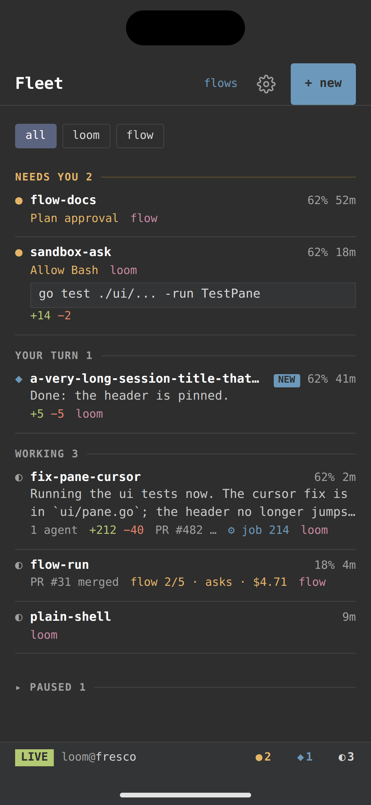

The same fleet in three directions, using the webshot fixture's data. Today's app is on the left for reference. The direction also decides which component libraries fit, as noted under each.

Today
Keeps loom's identity: monospace, the afterglow palette, and the TUI rail's accent bars, but with a real type scale, quieter chrome and tighter rows.
Libraries: your own components on headless primitives (Radix, Ark or React Aria). No styled kit fits this look.
Looks like Linear, Vercel or GitHub: a sans-serif UI, monospace kept for code, branches and diffstats, soft cards and tinted pills, with a light theme possible. Your amber still marks what needs you.
Libraries: fits shadcn/ui (Radix + Tailwind), Mantine or Park UI best. These are desktop-strong kits, so the desktop view comes cheaply.
Feels like a real iPhone app: large titles, grouped inset lists, a tab bar, sheets and swipe actions. On desktop it becomes a macOS-style sidebar app.
Libraries: fits Ionic (iOS mode on the phone, a split pane on desktop) or Konsta UI. It's the best on the phone and the weakest for a dense desktop.